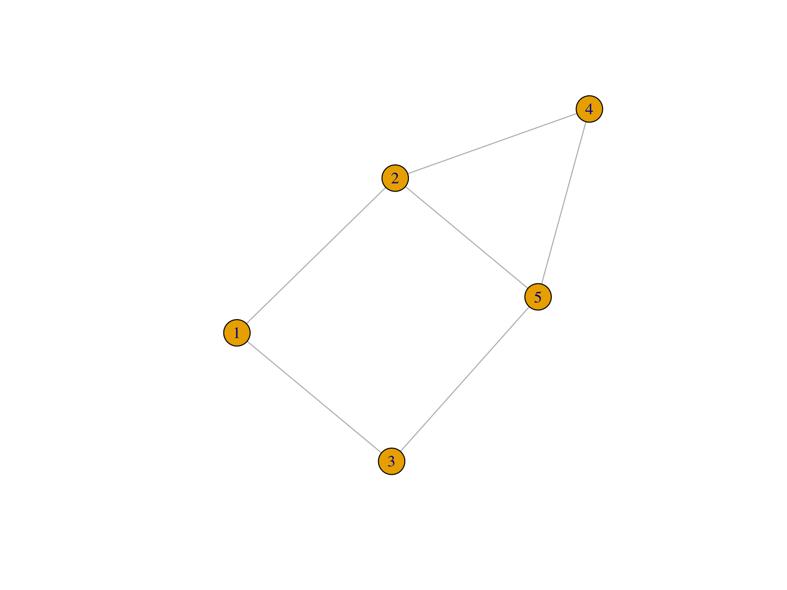

Network Data and Network Types
Today’s Dad Joke
Shout out to people wondering what the opposite of ‘in’ is.
Housekeeping
- Discussion questions
- Monday at noon
- Really good questions this week!
Schedule
- Housekeeping / Announcements (5-10)
- Discussion and review (35-45)
- Consolidation and Confusion (10-15)
- Supplementary lectures
- Response to needs
- Discuss at end of class
Review
- How did installing R + RStudio go?
- Homework review
- Encouragement to be prepared
- Time to identify confusion - it’s OK to be confused!
- Discussion questions review
Consolidation
- What were some of the key ideas?
- What are you thinking differently about now?
- What are remaining questions/confusions?
Homework and Reading Review
Basic Concepts
- What is a node?
- What is an edge?
- What is the “individual” perspective of data and how does it differ from a network perspective?
Network Representations

- What is the edgelist of this graph?
- What is the matrix representation of this graph?
Thursday
- Mostly working on R Lab together